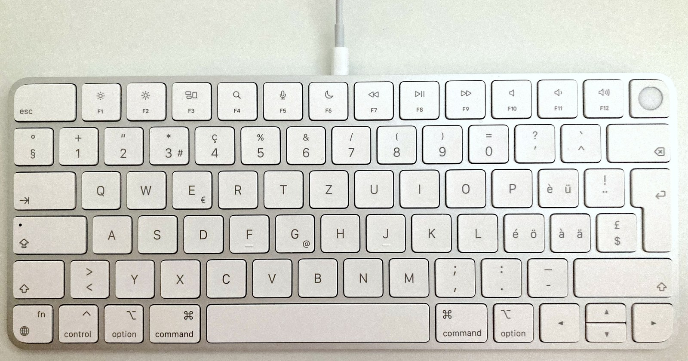

Magic Keyboard battery on Windows 10 and 11
Your Magic Keyboard needs no new driver, the software Windows uses to talk to your keyboard. You run one unlock instead.
- No new driver, no Apple software. The only download is Magic Tray itself.
- Windows stays as it came. No startup setting to change, unlike the 2024 mouse.
Turn the battery percent on
Magic Tray finds your keyboard's Bluetooth address itself, then asks permission before changing anything.
- Pair the keyboard in Windows Bluetooth settings.
- Click the Magic Tray icon beside the clock.
- Point at your keyboard's name to open its submenu.
- Click Fix battery reads.
- Click Yes when Windows asks for admin permission.
- Turn Bluetooth off and on again.
The percent shows in the menu: where to look and low battery warnings.
If you'd rather run the script yourself
Grab Install-KeyboardBattery.cmd from the release page. Right-click it and pick Run as administrator.
Can you help test a Magic Keyboard?
One keyboard has been confirmed by a tester: the Apple Wireless Keyboard from 2011. Every other keyboard below should work, but nobody has confirmed it yet.
| Keyboard | Device code | Status |
|---|---|---|
| Magic Keyboard | 024F / 0250 | needs a tester |
| Magic Keyboard with Touch ID | 0267 / 026C | needs a tester |
| Magic Keyboard (2021) | 029C | needs a tester |
Touch ID keyboards (0267 / 026C) have a round blank key right of F12:

Photo via Wikimedia Commons: Dbirdz, CC BY-SA 4.0.
We need Bluetooth Magic Keyboards. Tell us:
- Which keyboard you have
- Its four-character device code (where to find that)
- Your Windows version
- Whether the percent appeared before the unlock, and after it
Send a report. Other devices need testers too.
Common questions
- Does my Magic Keyboard need a special driver on Windows?
- No. Your Magic Keyboard keeps the standard Windows Bluetooth driver on Windows 10 and 11. Nothing from Apple gets installed, and no driver is swapped. You run one unlock from the Magic Tray menu, and the battery percent shows up beside your clock.
- Why doesn't my Magic Keyboard battery percent show up?
- Your keyboard does send its battery level. It labels that reading in a way Windows won't answer for, so the number never reaches the tray. We asked it 6,859 times in a row and got nothing back. The unlock relabels it once.
- Do I need that Windows startup setting the 2024 mouse uses?
- No. A Magic Keyboard needs no change to the way Windows starts. That startup setting is only for the 2024 USB-C Magic Mouse, whose driver Microsoft hasn't checked. Your keyboard keeps the standard Windows Bluetooth driver, and the one-time unlock runs on Windows exactly as it came.
- Does the unlock survive re-pairing the keyboard?
- No. Re-pairing wipes it. Remove the keyboard in Windows Bluetooth settings and add it again, and the unlock is gone. Run Fix battery reads from the Magic Tray menu once more to put it back. Until you do, Magic Tray lists your keyboard but shows the battery as blocked.
Show the technical details
On col02 the keyboard exposes Battery Strength at RID 0x47, declared Input-only, so FeatureReportByteLength is 0 and HidD_GetFeature returns nothing. Measured: 6,859 consecutive read timeouts and a 255-RID sweep with zero hits.
The patch relabels 0x47 as a Feature report in the BTHPORT CachedServices SDP cache, and re-pairing rebuilds that cache.
Source: MagicMouseTray/KeyboardBatteryDevice.cs and scripts/kbd-patch-cachedservices.ps1.